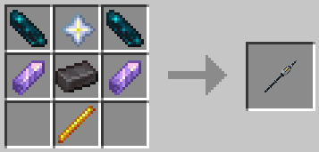

This mod contains intense flashing lights and visual effects that may trigger seizures in people with photosensitive epilepsy. Player discretion is advised. You can turn off Impact Frames, Sky Blackout, Cutscenes and Camera Shake in the in-game settings menu (K).
Mod này có nhiều hiệu ứng ánh sáng chớp nháy mạnh có thể gây co giật ở người mắc chứng động kinh nhạy sáng. Người chơi cần cân nhắc trước khi dùng. Bạn có thể tắt Impact Frames, Sky Blackout, Cutscenes và giảm Camera Shake trong menu cài đặt (K).
本模组包含高强度闪烁光线与视觉特效，可能诱发光敏性癫痫发作，请谨慎游玩。你可以随时按 K 打开设置菜单，关闭冲击帧、天空变暗、过场动画并调低镜头震动。
What's New in 1.6.0 Có Gì Mới Trong 1.6.0 1.6.0 更新亮点
Summary of changes introduced in God Wand 1.6.0.
Tóm tắt các tính năng và thay đổi chính trong God Wand 1.6.0.
God Wand 1.6.0 版本的主要新增功能与调整。
By default, spells no longer hurt or push tamed animals, mobs with a name tag, or mobs on a lead. Everything else is hit as before. Server owners can choose between protecting pets (default), hitting everything, or hitting monsters only via spellTargets.
Mặc định, mọi chiêu thức sẽ không làm tổn thương hay đẩy/hút thú cưng đã thuần hóa, mob có thẻ tên (name tag) hoặc mob đang buộc dây (lead). Mọi sinh vật khác vẫn trúng đòn như cũ. Chủ server có thể chọn bảo vệ thú cưng (mặc định), đánh tất cả, hoặc chỉ đánh quái vật bằng spellTargets.
默认情况下，法术不再伤害、吸引或击退已驯服的宠物、带命名牌的生物或拴绳牵引的生物，其余生物照常受影响。服主可通过 spellTargets 在“保护宠物（默认）”、“全部命中”和“仅敌对怪物”之间切换。
Hold left-click for Blue, hold right-click for Red, crash a full Red into a ready Blue for Purple (even across players!), hit an unready Blue for a Small Purple, or hold both buttons to form and fire a Purple sphere. See full guide →
Giữ chuột trái tạo Blue, giữ chuột phải tụ Red, bắn Red đầy lực vào Blue đã sẵn sàng để kích hoạt Purple (dùng chung giữa nhiều người chơi được!), bắn vào Blue chưa sẵn sàng tạo Small Purple, hoặc giữ cả hai chuột để tụ và bắn quả cầu Purple. Xem chi tiết →
按住左键召唤蓝，按住右键蓄力红；用蓄满的红击中就绪的蓝即可触发紫（支持跨玩家配合！）；击中未就绪的蓝会触发小紫；同时按住左右键可凝聚并发射紫球。查看完整说明 →
Adds 15 advancements across all nine skills. In the K menu: one Cutscenes switch for all four cutscenes, a Skill Sounds volume slider, Skill HUD crosshair rings, Bare Hand mode for Purple and Fuga, Red Recoil, and optional Purple: Third Person. On servers: master terrainDamage switch, pvp, spellTargets, and disabledSkills to turn off specific skills server-wide.
Thêm 15 thành tựu cho cả chín kỹ năng. Trong menu K: một nút Cutscenes bật/tắt cùng lúc cả 4 cutscene, thanh âm lượng riêng cho mod, vòng tâm Skill HUD, chế độ Bare Hand tay trần cho Purple và Fuga, Red Recoil và tùy chọn góc nhìn thứ ba cho Blue/Red. Trên server: công tắc tổng terrainDamage, pvp, spellTargets và disabledSkills để tắt riêng từng skill.
新增覆盖全部九大技能的 15 项进度成就。K 键设置菜单新增：一键开关全部四段过场动画的总开关、模组独立音效音量滑块、准星环提示、紫与 Fuga 的空手模式、红的后坐力以及可选第三人称视角。服务端新增总地形破坏开关 terrainDamage、pvp、spellTargets 以及禁用指定技能的 disabledSkills。
Overview & Controls Tổng Quan & Điều Khiển 概览与控制按键
Supported Minecraft versions (10 builds), controls for all nine skills, admin commands, and survival crafting.
Các phiên bản Minecraft được hỗ trợ (10 bản build), điều khiển cho cả chín kỹ năng, lệnh quản trị và công thức chế tạo.
支持的 Minecraft 版本（10 个构建包）、九大技能操作说明、管理员指令与生存合成配方。
| Minecraft | Java | Fabric (+ Fabric API) | NeoForge / Forge |
|---|---|---|---|
| 26.3 | Java 25 | godwand-fabric-26.3-1.6.0.jar |
godwand-neoforge-26.3-1.6.0.jar |
| 26.1.2 | Java 25 | godwand-fabric-26.1.2-1.6.0.jar |
godwand-neoforge-26.1.2-1.6.0.jar |
| 1.21.11 | Java 21 | godwand-fabric-1.21.11-1.6.0.jar |
godwand-neoforge-1.21.11-1.6.0.jar |
| 1.21.1 | Java 21 | godwand-fabric-1.6.0.jar |
godwand-neoforge-1.6.0.jar |
| 1.20.1 | Java 17 | godwand-fabric-1.20.1-1.6.0.jar |
godwand-forge-1.20.1-1.6.0.jar |
Open the skill wheel while holding the wand to switch between all nine skills.
Mở vòng tròn kỹ năng khi đang cầm trượng để chọn nhanh giữa cả chín chiêu.
手持神之杖时按住打开技能轮盘，在全部九种技能间快速切换。
Use the selected skill: tap or hold to charge, command Silent Gate while it waits, or hold to charge Red when Purple is selected.
Dùng kỹ năng đang chọn: bấm hoặc giữ để tụ lực, ra lệnh cho Silent Gate khi cổng đang chờ, hoặc giữ để tụ Red khi đang chọn Purple.
释放当前技能：点击或按住蓄力，在静默之门待命时下达开火指令，或在选中紫时按住蓄力红。
In Purple mode: hold for Blue, or hold together with Right-Click to form the Purple sphere. In all other modes: normal melee attack dealing 5 damage.
Ở chế độ Purple: giữ để gọi Blue, hoặc giữ cùng chuột phải để tụ quả cầu Purple. Ở các chiêu khác: đánh cận chiến gây 5 sát thương.
选中紫时：按住召唤蓝，或与右键同时按住凝聚紫球。其他技能模式下为 5 点伤害的普通近战攻击。
Open the settings menu: wand appearance, Cutscenes switch, Skill Sounds volume, Skill HUD, Bare Hand, Red Recoil, Purple: Third Person, and visual effects.
Mở menu cài đặt cá nhân: ngoại hình trượng, công tắc Cutscenes, âm lượng Skill Sounds, vòng tâm Skill HUD, tay trần Bare Hand, Red Recoil, góc nhìn thứ ba và hiệu ứng hình ảnh.
打开客户端设置菜单：调整法杖外观、过场动画总开关、技能音效音量、技能准星提示、空手模式、红的后坐力、紫第三人称及画面特效。
Hold Shift to form a temporary bridge in Spatial Path, cancel Silent Gate while forming, or cancel a charging Red. Press Esc or F5 during a cutscene to skip its camera.
Nhấn Shift để tạo cầu tạm khi bật Spatial Path, hủy Silent Gate khi đang dựng, hoặc hủy Red đang tụ. Bấm Esc hoặc F5 trong cutscene để bỏ qua góc quay.
开启空间之径时按 Shift 铺设临时桥梁，或在静默之门构筑、红蓄力时潜行取消；过场动画中按 Esc 或 F5 跳过镜头。
/godwand lock <skill> & /godwand unlock (OP Lv.2) lock or unlock the held wand to a single skill. /godwand reset_cooldowns [players] (OP Lv.4) clears every skill cooldown immediately.
/godwand lock <skill> và /godwand unlock (OP cấp 2) khóa hoặc mở khóa cây trượng đang cầm vào 1 chiêu. /godwand reset_cooldowns [players] (OP cấp 4) xóa sạch toàn bộ hồi chiêu ngay lập tức.
/godwand lock <skill> 与 /godwand unlock（权限 2）将手持法杖锁定或解锁为单一技能；/godwand reset_cooldowns [players]（权限 4）立即清除全部技能冷却。

Survival Crafting Recipe Công Thức Chế Tạo (Survival) 生存模式合成配方
Crafted in a standard 3×3 Crafting Table. The recipe unlocks automatically in your recipe book when you pick up a Nether Star. Install God Wand on both your client and the server.
Chế tạo trên bàn Crafting Table 3×3 thông thường. Công thức tự động mở khóa trong sổ công thức khi bạn nhặt được Nether Star. Cần cài God Wand ở cả máy người chơi lẫn máy chủ.
在标准 3×3 工作台中合成，获得下界之星后自动在配方书解锁。联机时需在客户端与服务端同时安装。
Nine Skills Chín Kỹ Năng 九大技能
What each spell does, default timings (in seconds), and how they behave.
Cách hoạt động của từng kỹ năng, thông số mặc định (tính bằng giây và block) và lưu ý khi dùng.
九大法术的玩法机制、默认数值（以秒与格为单位）与实用技巧。
Open a temporary path straight through solid terrain. Blocks return behind you without breaking attached decorations. Its shield blocks incoming projectiles and pushes nearby enemies away, and holding Shift forms a temporary bridge across gaps.
Mở lối đi tạm xuyên thẳng qua núi đá; các khối tự đóng lại phía sau mà không làm rơi đồ trang trí gắn trên tường. Lá chắn tự chặn đạn bắn tới, đẩy lùi mục tiêu xung quanh, và giữ Shift sẽ tạo cầu tạm để băng qua vực.
在实心山体中开辟临时通道，走过后方块自动复原，不会破坏附着装饰物。自带护盾可挡下敌方弹射物并推开周围目标，按住 Shift 可在空中生成临时桥梁。
Hold right-click to charge a gravity orb, then release to launch it. It pulls in nearby enemies and blocks before collapsing. Right-click again mid-air to trigger the collapse early. Regular mobs under 50 HP are crushed immediately, and displaced terrain returns afterward.
Giữ chuột phải để tụ quả cầu trọng lực rồi thả ra để phóng đi. Quả cầu hút kẻ địch và khối đất đá xung quanh rồi sụp đổ. Nhấp chuột phải lần nữa để kích nổ sớm; mob thường dưới 50 HP bị nghiền nát ngay, và đất đá tự trở lại chỗ cũ sau đó.
按住右键蓄力引力球，松开发射。它会吸引周围敌人与方块随后坍缩。空中再次右键可提前引爆，50 血以下的普通生物会被瞬间粉碎，被吸走的方块随后恢复原位。
Gather nearby blocks into a spinning drill, then drive it into the ground. Server settings let you keep the temporary block lift while turning off permanent crater damage.
Gom các khối xung quanh thành mũi khoan xoay tròn rồi giáng mạnh xuống mặt đất. Cài đặt server cho phép giữ hiệu ứng bốc khối lên trời mà không để lại hố phá hủy vĩnh viễn.
将周围方块聚集成高速旋转的巨型钻头并猛砸地面。服务端可以单独关闭永久地形破坏，同时保留炫酷的抓取方块特效。
earthDrillTerrainDamage / BlockLift
Hold right-click for 7 seconds to unleash a black hole and a massive explosion (120-block radius). Mobs at or below 50 max HP are defeated instantly, and dropped experience merges into fewer large orbs to keep the server smooth. Server owners can allow the block pull, terrain destruction, both, or neither.
Giữ chuột phải 7 giây để mở hố đen và phát nổ trên bán kính 120 block. Mob có máu tối đa từ 50 HP trở xuống bị hạ ngay lập tức, còn kinh nghiệm rơi ra được gộp thành các hạt lớn giúp giảm lag. Chủ server có thể bật/tắt riêng phần hút khối và phần phá địa hình.
按住右键 7 秒释放黑洞并引爆半径 120 格的大爆炸。最大生命值不超过 50 的生物会被直接秒杀，掉落经验自动合并为大经验球以防卡顿。服主可分别开关方块吸取与地形破坏。
Charge a stone projectile and fire it straight through enemies, exploding on block impact. Impact block destruction can be turned off separately.
Tụ lực tạo mũi đá nén rồi bắn xuyên qua kẻ địch, phát nổ khi chạm khối. Có thể tắt riêng phần phá khối khi va chạm.
蓄力发射高速压缩石炮，直线穿透敌人并在撞击方块时爆炸。撞击破坏方块可单独关闭。
stoneCannonTerrainDamage
Hold right-click as a fortress rises around you and energy gathers into your sword. The screen goes dark and a heartbeat waits for you. Let go to detonate: a column of light sweeps a 98-block radius (9,999 center damage, clearing water and lava, plus 15-damage outer shockwaves). You cannot move or be hurt while casting; let go early to cancel. Has its own cutscene.
Giữ chuột phải khi pháo đài dâng lên quanh bạn và năng lượng tụ vào thanh kiếm. Màn hình tối lại với nhịp tim chờ đợi. Thả chuột để kích nổ: cột sáng quét bán kính 98 block (9.999 sát thương tâm, xóa cả nước lẫn dung nham, kèm sóng ngoài 15 sát thương). Bạn bất tử và đứng yên khi đang tụ; thả sớm để hủy. Có cutscene riêng.
按住右键，壁垒升起，能量汇聚于剑身，随后四周陷入黑暗并伴随心跳等待你松手。松开瞬间引爆：光柱横扫 98 格半径（核心 9,999 伤害，清除水与岩浆，外围冲击波每击 15 伤害）。施法期间无法移动且免疫伤害，提前松手可取消。拥有专属过场动画。
Hold right-click to gather fire between your palms and draw a bow of flame. Aim, then release: the arrow becomes a gliding phoenix. Where it hits, a meteor falls and a pillar of fire erupts, burning enemies and slowing those caught underneath. Let go early to cancel. Has its own cutscene.
Giữ chuột phải để tụ lửa giữa hai lòng bàn tay rồi giương cung lửa. Ngắm và thả: mũi tên hóa thành phượng hoàng lướt đi; tại điểm trúng, thiên thạch rơi xuống và cột lửa bùng lên, thiêu đốt và làm chậm kẻ địch bên dưới. Thả sớm để hủy. Có cutscene riêng.
按住右键在掌间聚火并拉开烈焰之弓。瞄准后松开，火焰箭化为滑翔的凤凰；命中处陨石坠落、火柱喷涌，点燃敌人并减速其下方目标。提前松手可取消。拥有专属过场动画。
Raise the wand to draw a giant magic circle across the sky as a winged gate descends. Right-click again to give the command (or wait): 220 magic circles rain light beams (80 damage each) on nearby monsters for 20 seconds, and a golden beam (6× damage) finishes off the strongest one. Sneak to cancel while the gate forms. Has its own cutscene.
Giơ trượng lên để vẽ đại ma pháp trận trên trời và gọi cổng có cánh hạ xuống. Nhấp chuột phải lần nữa để ra lệnh (hoặc chờ): 220 vòng phép trút mưa tia sáng (80 sát thương mỗi tia) xuống quái vật xung quanh trong 20 giây, khép lại bằng tia vàng (gấp 6 lần sát thương) kết liễu mục tiêu mạnh nhất. Nhấn Shift để hủy lúc cổng đang mở. Có cutscene riêng.
高举法杖在天空绘出巨型法阵，带翼之门随之降临。再次右键下达指令（或等待片刻）：220 个法阵持续 20 秒向周围怪物倾泻光束（每发 80 伤害），最后降下 6 倍伤害的黄金光束终结最强目标。成形期间潜行可取消。拥有专属过场动画。
Two orbs, one in each hand. Summon Blue with left-click, charge Red with right-click, crash them together into Purple (solo or with a friend), or hold both buttons to launch a Purple sphere. In first person, your bare hand is shown by default (toggleable via bareHand).
Hai quả cầu, mỗi tay một lực. Giữ chuột trái gọi Blue, giữ chuột phải tụ Red, cho chúng va vào nhau để tạo Purple (một mình hoặc phối hợp với bạn bè), hoặc giữ cả hai nút chuột để bắn quả cầu Purple. Ở góc nhìn thứ nhất, game mặc định hiện tay trần (bật/tắt bằng bareHand).
一手一球，双力交锋。按住左键召唤蓝，按住右键蓄力红，让红撞入蓝即可融合成紫（单人或与队友合作皆可），或同时按住左右键发射紫球。第一人称下默认以空手施法（可通过 bareHand 切换）。
Blue (Hold Left-Click) Blue (Giữ chuột trái) 蓝（按住左键）
Summons a gravity orb 8 blocks in front of you that follows your aim with weight and momentum. It pulls mobs inward in a spiral, damages anything inside its core every 0.25 seconds, and tears loose terrain into itself (only when terrain damage is on). After dealing 50 real damage (overkill does not count) or scoring 3 kills, Blue becomes ready and the inner crosshair ring turns solid cyan. Letting go before it is ready makes it vanish. Letting go when it is ready throws it gently along your aim; it drifts to a stop and hangs there for 8 seconds. If you keep holding until the 8-second limit, a ready Blue anchors itself, while an unready Blue vanishes.
Triệu hồi quả cầu trọng lực cách mắt 8 block, bám theo hướng ngắm của bạn có độ nặng và quán tính. Nó hút mob xoáy vào tâm, gây sát thương mỗi 0,25 giây trong lõi và bóc tách địa hình xung quanh (chỉ khi bật phá địa hình). Sau khi gây đủ 50 sát thương thực (không tính sát thương thừa) hoặc hạ 3 mob, Blue chuyển sang trạng thái sẵn sàng và vòng tâm bên trong chuyển sang xanh sáng liền nét. Thả chuột trước khi sẵn sàng sẽ làm Blue biến mất. Thả chuột khi đã sẵn sàng sẽ ném nhẹ nó về phía trước; nó trôi chậm lại, dừng hẳn và treo lơ lửng trong 8 giây. Nếu giữ hết giới hạn 8 giây, Blue đã sẵn sàng sẽ tự neo lại, còn Blue chưa sẵn sàng sẽ biến mất.
在准星前方 8 格处召唤一颗带惯性跟随视角的引力球。它会将生物呈螺旋状拉向中心，每 0.25 秒对核心内目标造成伤害，并吞噬周围松散方块（仅在开启地形破坏时生效）。累计造成 50 点实际伤害（溢出伤害不计）或击杀 3 只生物后，蓝进入就绪状态，准星内环变为实心亮青色。在就绪前松手，蓝会直接消散；就绪后松手则会沿视线轻抛，漂移停稳并悬停 8 秒。达到 8 秒按住上限时，就绪的蓝会自动悬停，未就绪的蓝则消散。
| PropertyThông số属性 | Default ValueMặc định默认值 | Config KeyKey cấu hình配置键名 |
|---|---|---|
| Pull radius / Eat radiusBán kính hút / Bóc khối吸引半径 / 吞噬方块半径 | 8 blocks / 5 blocks | bluePullRadius, blueEatRadius |
| Core damage (every 0.25 s, 3-block core)Sát thương lõi (mỗi 0,25 giây, bán kính lõi 3 block)核心伤害（每 0.25 秒，3 格核心半径） | 20 DMG | blueCoreDamage |
| Ready thresholdĐiều kiện sẵn sàng就绪条件 | 50 real damage or 3 kills50 sát thương thực hoặc 3 mạng50 点实际伤害 或 击杀 3 只 | blueReadyDamage, blueReadyKills |
| Max hold / Anchor timeGiữ tối đa / Thời gian neo最长按住 / 悬停时长 | 8 s (160 t) / 8 s (160 t) | blueChargeTicks, blueAnchorTicks |
| Cooldown (starts when Blue ends)Hồi chiêu (tính khi Blue biến mất)冷却时间（蓝消失后开始计时） | 3 s (60 ticks) | blueCooldownTicks |
Red (Hold Right-Click) Red (Giữ chuột phải) 红（按住右键）
Charges to full power in 2.5 seconds; the outer crosshair ring fills clockwise and flashes red-white once full. You can keep holding as long as you like (a quick tap under 0.3 s or sneaking cancels with no cooldown). Release to fire: Red blasts forward up to 100 blocks, carves a tunnel, pauses hit enemies briefly before launching them away, and detonates into a crater on solid ground or at max range. A full Red kicks you backward (toggle via client redRecoil).
Tụ đầy lực trong 2,5 giây; vòng tâm bên ngoài đầy dần theo chiều kim đồng hồ và nhấp nháy đỏ-trắng khi đạt tối đa. Bạn có thể giữ bao lâu tùy thích (nhấp nhanh dưới 0,3 giây hoặc nhấn Shift để hủy không tốn hồi chiêu). Thả chuột để bắn: Red bay tối đa 100 block, khoét đường hầm, làm khựng nhẹ mục tiêu trúng đòn rồi hất văng đi, và nổ tạo hố khi chạm đất hoặc hết tầm. Phát bắn đầy lực sẽ đẩy lùi chính bạn (bật/tắt ở mục client redRecoil).
按住 2.5 秒蓄满，准星外环顺时针填满并在蓄满后闪烁红白光，之后可继续按住待机（轻点不足 0.3 秒或潜行可无冷却取消）。松开后发射：红向前高速飞行最远 100 格，沿途掘出隧道，命中敌人短暂停顿后猛烈击飞，并在触地或到达射程尽头时炸出弹坑。蓄满发射会对施法者产生后坐力（可在客户端 redRecoil 中关闭）。
| PropertyThông số属性 | Default ValueMặc định默认值 | Config KeyKey cấu hình配置键名 |
|---|---|---|
| Full charge timeThời gian tụ đầy蓄满时间 | 2.5 s (50 ticks) | redChargeTicks |
| Damage (20% – 100% by charge)Sát thương (20% – 100% theo mức tụ)伤害（按蓄力 20% – 100% 缩放） | 500 DMG (full) | redDamage |
| Flight speed / Max rangeTốc độ bay / Tầm tối đa飞行速度 / 最大射程 | 3 blocks/tick / 100 blocks | redRange |
| Tunnel radius / Crater radiusBán kính hầm / Hố nổ隧道半径 / 弹坑半径 | 2 blocks / 5 blocks | redTunnelRadius, redCraterRadius |
| Cooldown (starts on fire)Hồi chiêu (tính lúc bắn)冷却时间（发射时开始计时） | 4 s (80 ticks) | redCooldownTicks |
Purple (Full — Ready Blue + Full Red) Purple đầy đủ (Blue sẵn sàng + Red đầy lực) 完整紫（就绪的蓝 + 蓄满的红）
Fire a fully charged Red (unless purpleNeedsFullRed is false) into a ready Blue. A ready Blue reaches out 2 extra blocks (purpleAssist) to catch a Red passing nearby. The two orbs rise 16 blocks while playing the Purple cutscene, then a massive sphere erases terrain in a 48-block radius, stains the crater violet, and deals 9,999 damage within 1.5× that radius (72 blocks). Works across players: player A's Blue and player B's Red.
Bắn một phát Red đầy lực (trừ khi tắt purpleNeedsFullRed) vào một quả Blue đã sẵn sàng. Blue sẵn sàng tự vươn thêm 2 block (purpleAssist) để bắt các phát Red bay sượt qua. Hai quả cầu bay lên 16 block cùng cutscene riêng, rồi bùng nổ xóa sạch địa hình trong bán kính 48 block, nhuộm tím vùng hố và gây 9.999 sát thương trong phạm vi 1,5 lần bán kính đó (72 block). Phối hợp được nhiều người chơi: Blue của người A kết hợp Red của người B.
将一颗蓄满的红（除非 purpleNeedsFullRed 设为 false）射入一颗就绪的蓝。就绪的蓝会额外向外延伸 2 格（purpleAssist）吸附擦身而过的红。两球上升 16 格并播放紫的过场动画，随后巨型球体在 48 格半径内抹除地形并将坑周染成紫色，同时在 1.5 倍半径（72 格）内造成 9,999 伤害。支持跨玩家配合：玩家 A 的蓝配合玩家 B 的红。
| PropertyThông số属性 | Default ValueMặc định默认值 | Config KeyKey cấu hình配置键名 |
|---|---|---|
| Catch assistHỗ trợ bắt Red吸附辅助距离 | +2 blocks | purpleAssist |
| Crater radius / Damage reachBán kính hố / Tầm sát thương抹除半径 / 伤害范围 | 48 blocks / 72 blocks (1.5×) | purpleRadius |
| Detonation damageSát thương nổ引爆伤害 | 9,999 DMG | purpleDamage |
| Cooldown (locks both Blue & Red)Hồi chiêu (khóa cả Blue & Red)冷却（同时锁定蓝与红） | 60 s (1200 ticks) | purpleCooldownTicks |
Small Purple (Any Other Red into a Blue) Small Purple (Các pha Red chạm Blue khác) 小紫（其他红撞蓝组合）
Firing an uncharged Red into Blue, or any Red into an unready Blue, creates an unstable Small Purple with no cutscene. It crackles in place and explodes after 2.5 seconds. Its crater size and damage grow with how far the Blue had charged (40%–80% charge factor, scaled by smallPurpleStrength). Turn it off with smallPurple: false. Quick combo: fire Red, then summon Blue right in its path.
Bắn Red chưa đầy lực vào Blue, hoặc bắn bất kỳ phát Red nào vào Blue chưa sẵn sàng, sẽ tạo ra Small Purple không có cutscene. Nó nổ tại chỗ sau 2,5 giây; kích thước hố và sát thương tăng theo mức tụ của Blue (hệ số 40%–80%, nhân thêm smallPurpleStrength). Có thể tắt bằng smallPurple: false. Combo nhanh: bắn Red ra trước rồi gọi Blue ngay trước đường bay của nó.
用未蓄满的红击中蓝，或用任意红击中未就绪的蓝，都会触发无过场动画的“小紫”。它在原地蓄能 2.5 秒后爆炸，破坏范围与伤害随蓝的充能进度提升（40%–80% 系数，再乘 smallPurpleStrength）。可通过 smallPurple: false 关闭。快捷连招：先射出红，随即在弹道正前方召出蓝。
| PropertyThông số属性 | Default ValueMặc định默认值 | Config KeyKey cấu hình配置键名 |
|---|---|---|
| Detonation delayĐộ trễ phát nổ引爆延迟 | 2.5 s (50 ticks) | — |
| Crater / Damage scalingBán kính hố / Sát thương弹坑 / 伤害缩放 | 7 – 13 blocks / 1,000 – 2,000 DMG (by Blue charge)7 – 13 block / 1.000 – 2.000 DMG (theo mức tụ Blue)7 – 13 格 / 1,000 – 2,000 伤害（随蓝充能） | smallPurple, smallPurpleStrength |
| Cooldown (1/4 of Purple, locks both)Hồi chiêu (1/4 của Purple, khóa cả hai)冷却（紫冷却的 1/4，双锁） | 15 s (300 ticks) | purpleCooldownTicks ÷ 4 |
Purple Sphere (Hold Both Mouse Buttons) Quả cầu Purple (Giữ cả hai nút chuột) 紫球（同时按住左右键）
Press left-click and right-click together. Two orbs appear on either side of you, rush straight in until their rims touch (0.9 s), and form a 2-block purple sphere in front of you at 2.5 seconds. You can look around freely while holding it. Release either button to fire it straight ahead: it travels 1.6 blocks per tick for up to 90 blocks, carving a 3-block tunnel and dealing purpleDamage × 0.2 × smallPurpleStrength (1,999.8 damage by default). Releasing before 2.5 seconds cancels it with no cooldown. Pressing both buttons within 0.3 seconds goes straight into the sphere without Blue or Red flashing up on their own.
Nhấn giữ chuột trái và chuột phải cùng lúc. Hai quả cầu xanh-đỏ hiện ra hai bên, lao thẳng vào nhau cho tới khi chạm mép (0,9 giây) rồi tụ thành quả cầu tím bán kính 2 block trước mặt bạn sau 2,5 giây. Bạn có thể xoay góc nhìn tự do khi đang giữ. Thả một trong hai nút để bắn thẳng về phía trước: bay 1,6 block/tick xa tới 90 block, khoét đường hầm bán kính 3 block và gây sát thương purpleDamage × 0,2 × smallPurpleStrength (mặc định 1.999,8 DMG). Thả trước 2,5 giây sẽ hủy không tốn hồi chiêu. Bấm cả hai nút trong vòng 0,3 giây sẽ vào thẳng chiêu này mà không hiện Blue hay Red riêng lẻ.
同时按住鼠标左键与右键：蓝红双球在身侧显现并直线聚拢，0.9 秒时边缘相触，2.5 秒时在你正前方凝聚成半径 2 格的紫球；蓄力期间可自由转动视角。松开任意按键即可直线发射：速度 1.6 格/刻，最远飞行 90 格，掘出半径 3 格的隧道，造成 purpleDamage × 0.2 × smallPurpleStrength（默认 1,999.8）伤害。2.5 秒前松手则无冷却取消；0.3 秒内双键同按可直入紫球，不会误闪单独的蓝或红。
| PropertyThông số属性 | Default ValueMặc định默认值 | NotesGhi chú说明 |
|---|---|---|
| Input grace / Merge / ReadyĐộ trễ phím / Chạm nhau / Thành hình双键宽限 / 相触 / 成形 | 0.3 s / 0.9 s / 2.5 s | 6 / 18 / 50 ticks |
| Sphere radius / Tunnel radiusBán kính cầu / Bán kính hầm球体半径 / 掘进半径 | 2 blocks / 3 blocks | SHOT_RADIUS / SHOT_CARVE |
| Speed / RangeTốc độ / Tầm bay速度 / 射程 | 1.6 blocks/tick / 90 blocks | Stops at unloaded chunksDừng nếu gặp chunk chưa tải遇未加载区块自动停止 |
| Damage / CooldownSát thương / Hồi chiêu伤害 / 冷却 | 1,999.8 DMG / 15 s (300 ticks) | purpleDamage × 0.2 × smallPurpleStrength; purpleCooldownTicks ÷ 4 |
Cooldowns & Hotbar Display Hồi Chiêu & Hiển Thị Trên Thanh Hành Động 独立冷却与快捷栏提示
Blue and Red each track their own timer: Blue's 3-second cooldown starts when Blue disappears, and Red's 4-second cooldown starts when Red fires. Purple does not have a third timer — it locks both Blue and Red at once (60 s for full Purple, 15 s for Small Purple or Purple sphere). Above the hotbar, the text tells you exactly what is cooling down: "Blue: 3s" in blue, "Red: 4s" in red, or "Purple: 15s" in violet when Purple locked both.
Blue và Red có bộ đếm hồi chiêu riêng: Blue (3 giây) bắt đầu đếm khi Blue biến mất, còn Red (4 giây) bắt đầu đếm lúc bắn. Purple không có bộ đếm thứ ba mà sẽ khóa cả hai cùng lúc (60 giây cho Purple đầy đủ, 15 giây cho Small Purple hoặc quả cầu Purple). Dòng chữ phía trên thanh hotbar báo rõ chiêu nào đang hồi: "Blue: 3s" màu xanh dương, "Red: 4s" màu đỏ, hoặc "Purple: 15s" màu tím khi Purple khóa cả hai.
蓝与红各自拥有独立冷却：蓝（3 秒）在蓝消失后计时，红（4 秒）在发射时计时。紫没有第三个独立计时器，而是同时锁定蓝与红（完整紫 60 秒，小紫与紫球各 15 秒）。快捷栏上方会清晰标示冷却中的技能：蓝色文字“蓝：3 秒”、红色文字“红：4 秒”，或双锁时显示紫色文字“紫：15 秒”。
Multiplayer: Player A's Blue + Player B's Red Chơi Nhiều Người: Blue của A + Red của B 多人协作：玩家 A 的蓝 + 玩家 B 的红
Two players can combine their orbs together. Everyone nearby sees the orbs, the merge and the sphere, in first or third person.
Hai người chơi có thể kết hợp cầu của nhau. Mọi người đứng gần đều thấy rõ các quả cầu, pha hợp nhất và quả cầu tím dù ở góc nhìn thứ nhất hay thứ ba.
两名玩家可以将彼此的球体融合触发紫。附近所有玩家无论第一人称还是第三人称，都能看到双球、融合与紫球特效。
| RuleQuy tắc项目 | Full PurplePurple đầy đủ完整紫 | Small PurpleSmall Purple小紫 |
|---|---|---|
| Whose PurpleThuộc về ai归属者 | Both; both see the cutsceneCả hai; cả hai cùng xem cutscene双方共有；双方均观看过场动画 | BothCả hai双方共有 |
| Damage, kills, XP, dropsSát thương, mạng hạ, XP, vật phẩm伤害、击杀、经验与掉落 | B (the Red shooter)B (người bắn Red)B（发射红的玩家） | B |
| "Imaginary Mass" advancementThành tựu "Imaginary Mass"「虚式」进度成就 | No (Small Purple & Purple sphere only)Không (chỉ cấp ở Small Purple & quả cầu Purple)否（仅小紫与紫球授予） | A and BCả A và BA 与 B |
| "Nah, I'd Win" advancementThành tựu "Nah, I'd Win"「没事，我会赢」进度成就 | A and B (on kill)Cả A và B (khi hạ mục tiêu)A 与 B（击杀目标时） | NoKhông否 |
| Are A and B hurtA và B có bị trúng đòn khôngA 与 B 是否受伤 | NoKhông不会 | NoKhông不会 |
| Other playersNgười chơi khác其他玩家 | Only with pvp onChỉ khi bật pvp仅在开启 pvp 时 |
Only with pvp onChỉ khi bật pvp仅在开启 pvp 时 |
| CooldownHồi chiêu冷却时间 | Both locked 60 sCả hai bị khóa 60 giây双方均锁定 60 秒 | Both locked 15 sCả hai bị khóa 15 giây双方均锁定 15 秒 |
I am Atomic, Fuga, Silent Gate, and Purple each have their own cutscene and soundtrack. Press Esc or F5 at any time to skip the camera. Open the settings menu (K) to toggle all four at once with the Cutscenes switch, or turn individual cutscenes on and off in config/godwand-client.json (atomicCutscene, fugaCutscene, gateCutscene, purpleCutscene).
I am Atomic, Fuga, Silent Gate và Purple đều có cutscene và nhạc nền riêng. Bấm Esc hoặc F5 bất cứ lúc nào để bỏ qua góc quay. Mở menu cài đặt (K) để bật/tắt cả bốn bằng một công tắc Cutscenes, hoặc bật/tắt từng chiêu riêng trong config/godwand-client.json (atomicCutscene, fugaCutscene, gateCutscene, purpleCutscene).
吾即原子、Fuga（开）、静默之门和紫都配有专属过场动画与配乐。随时按 Esc 或 F5 即可跳过镜头。按 K 打开设置菜单可用过场动画总开关一键全部开关，也可以在 config/godwand-client.json 中逐项开关（atomicCutscene、fugaCutscene、gateCutscene、purpleCutscene）。
Advancements Thành Tựu (Advancements) 进度成就 (Advancements) New in 1.6.0
God Wand 1.6.0 adds 15 advancements under its own tab. Skill-use advancements pop up once the spell finishes playing (after its cutscene), so they do not interrupt cinematics.
God Wand 1.6.0 bổ sung 15 thành tựu trong tab riêng. Các thành tựu dùng kỹ năng sẽ hiện ra sau khi chiêu thức (và cutscene) chạy xong để không che mất hình ảnh.
God Wand 1.6.0 新增独立分页下的 15 项进度成就。释放技能类成就会在法术（含过场动画）结束后弹出，不会打断演出画面。
God Wand (root)
├── Where I Walk, There Is a Road (use_0 — Spatial Path)
├── Event Horizon (use_1 — Singularity)
│ └── Universal Pull (kill_1 — Kill with Singularity) [Goal]
├── Who Do You Think I Am? (use_2 — Earth Drill)
│ └── Pierce the Heavens (kill_2 — Kill with Earth Drill) [Goal]
├── EXPLOSION! (use_3 — Supernova)
├── Not a Single Word (use_4 — Stone Cannon)
├── The Shadow Steps Out (use_5 — I am Atomic)
├── Open. (use_6 — Fuga)
├── In Perfect Silence (use_7 — Silent Gate)
└── Lapse (blue — Summon Blue)
└── Reversal (red — Fire Red)
├── Imaginary Mass (purple — Small Purple / Purple sphere) [Goal]
└── Nah, I'd Win (purple_kill — Kill with full Purple) [Challenge]
| Title (In-Game)Tên trong game游戏内名称 | ID & FrameID & KhungID 与边框 | ParentNhánh cha前置进度 | How to UnlockCách đạt được达成方式 |
|---|---|---|---|
| God WandGod Wand神之杖 | root • Task |
— | Hold a God Wand in your inventory. ("Hold a wand that bends the world") Sở hữu một cây God Wand trong túi đồ. 握住一根能扭曲世界的魔杖（在背包中持有神之杖）。 |
| Where I Walk, There Is a RoadWhere I Walk, There Is a Road朕行之处，即是道路 | use_0 • Task |
root |
Walk the Spatial Path. Kích hoạt kỹ năng Spatial Path. 踏上空间之路（使用空间之径）。 |
| Event HorizonEvent Horizon事件视界 | use_1 • Task |
root |
Open a Singularity. Thi triển kỹ năng Singularity. 开启奇点（使用奇点）。 |
| Universal PullUniversal Pull万象天引 | kill_1 • Goal |
use_1 |
Crush a mob in a Singularity's collapse. Hạ một sinh vật bằng pha sụp đổ của Singularity. 让生物在奇点的坍缩中粉碎。 |
| Who Do You Think I Am?Who Do You Think I Am?你以为我是谁？ | use_2 • Task |
root |
Drive the Earth Drill. Thi triển kỹ năng Earth Drill. 驾驭大地钻头（使用大地钻击）。 |
| Pierce the HeavensPierce the Heavens贯穿天际 | kill_2 • Goal |
use_2 |
Drill a mob to its end with Earth Drill. Hạ một sinh vật bằng Earth Drill. 用钻头终结一只生物（以大地钻击击杀生物）。 |
| EXPLOSION!EXPLOSION!爆裂！ | use_3 • Task |
root |
Cast Supernova. Once a day is never enough. Thi triển Supernova. Mỗi ngày một lần chẳng bao giờ là đủ. 施放超新星——一天一次根本不够。 |
| Not a Single WordNot a Single Word无咏唱 | use_4 • Task |
root |
Fire a Stone Cannon without a chant. Bắn Stone Cannon không cần đọc chú. 无需咏唱地射出岩炮（使用石炮）。 |
| The Shadow Steps OutThe Shadow Steps Out暗影现身 | use_5 • Task |
root |
Unleash I am Atomic. Tung chiêu I am Atomic. 释放「I am Atomic」。 |
| Open.Open.开。 | use_6 • Task |
root |
Loose Fuga. Phóng mũi tên Fuga. 射出 Fuga。 |
| In Perfect SilenceIn Perfect Silence万籁俱寂 | use_7 • Task |
root |
Raise the Silent Gate. Triệu hồi Silent Gate. 升起沉默之门（使用静默之门）。 |
| LapseLapse顺转 | blue • Task |
root |
Summon Blue (hold left-click in Purple mode past 0.3 s). Triệu hồi Blue (giữ chuột trái ở chế độ Purple quá 0,3 giây). 召唤苍（在紫模式下按住左键超过 0.3 秒召唤蓝）。 |
| ReversalReversal逆转 | red • Task |
blue |
Fire Red. Bắn Red. 射出赫（发射红）。 |
| Imaginary MassImaginary Mass虚式 | purple • Goal |
red |
Fire Red into a Blue before it is ready (Small Purple), or fire a Purple sphere. Bắn Red vào Blue trước khi nó sẵn sàng (Small Purple), hoặc bắn quả cầu Purple. 在苍尚未完成时用赫击中它（触发小紫），或发射紫球。 |
| Nah, I'd WinNah, I'd Win没事，我会赢 | purple_kill • Challenge |
red |
Take something down with a full Purple detonation. Hạ gục một mục tiêu bằng vụ nổ Purple đầy đủ. 用紫击倒目标（以完整紫引爆击杀生物）。 |
Wand Appearances & Melee Damage Ngoại Hình Trượng & Sát Thương Cận Chiến 法杖外观与近战伤害
Pick an appearance in the K menu or use AUTO to swap with your active skill. All appearances deal 5 Melee Damage on normal left-click attacks (outside Purple mode). With Bare Hand enabled, Purple and Fuga show your empty hand in first person.
Chọn ngoại hình trong menu K hoặc để AUTO tự đổi theo kỹ năng. Mọi ngoại hình đều gây 5 sát thương cận chiến khi đánh thường bằng chuột trái (trừ lúc đang chọn Purple). Khi bật Bare Hand, Purple và Fuga sẽ hiện tay trần ở góc nhìn thứ nhất.
在 K 键菜单中自选法杖外观，或选择 AUTO 随技能自动切换。所有外观的普通左键近战伤害均为 5 点（紫模式除外）。开启空手后，紫与 Fuga 在第一人称下会隐藏法杖、以空手施法。
| Skin ID | Display NameTên hiển thị显示名称 | How It SwitchesCách kích hoạt切换规则 | MeleeCận chiến近战 |
|---|---|---|---|
AUTO |
Auto (Thematic)Tự động theo chiêu自动（按技能主题） | Earth Drill & Stone Cannon: Aqua Heartia; I am Atomic: Shadow Blade; Silent Gate: Silent Witch Staff; all others (Spatial Path, Singularity, Supernova, Fuga, Purple): Eclipse Earth Drill & Stone Cannon: Aqua Heartia; I am Atomic: Shadow Blade; Silent Gate: Silent Witch Staff; các chiêu còn lại (Spatial Path, Singularity, Supernova, Fuga, Purple): Eclipse 大地钻击与石炮：水之心；吾即原子：暗影之刃；静默之门：沉默魔女之杖；其余技能（空间之径、奇点、超新星、Fuga、紫）：魔导科技法杖 (Eclipse) | 5 DMG |
DEFAULT |
Magitech Wand (Eclipse)Magitech Wand (Eclipse)魔导科技法杖 (Eclipse) | Manual via K menuChọn thủ công trong menu K在 K 菜单手动选择 | 5 DMG |
AQUA_HEARTIA |
Aqua HeartiaAqua Heartia水之心 | Manual via K menuChọn thủ công trong menu K在 K 菜单手动选择 | 5 DMG |
SHADOW_BLADE |
Shadow BladeShadow Blade暗影之刃 | Manual via K menuChọn thủ công trong menu K在 K 菜单手动选择 | 5 DMG |
SILENT_WITCH |
Silent Witch StaffSilent Witch Staff沉默魔女之杖 | Manual via K menuChọn thủ công trong menu K在 K 菜单手动选择 | 5 DMG |
Configuration Guide Hướng Dẫn Cấu Hình 完整配置指南
Everything a player or server owner needs to configure God Wand without reading code. Reminder: 20 ticks = 1 second.
Mọi thứ người chơi và chủ server cần để chỉnh God Wand mà không cần đọc code. Lưu ý: 20 tick = 1 giây.
无需阅读源码即可完成单人或服务器全部配置。提示：20 刻 (ticks) = 1 秒。
config/godwand-server.jsonControls gameplay: damage, cooldowns, terrain damage, PvP, and who spells can hit. On a multiplayer server it lives in the server's config/ folder; in single-player it lives in your game's config/ folder. Reopening a single-player world picks up your edits automatically.
Điều khiển lối chơi: sát thương, hồi chiêu, phá địa hình, PvP và mục tiêu phép thuật. Khi chơi mạng, file nằm trong thư mục config/ của server; khi chơi đơn, file nằm trong thư mục config/ của game. Mở lại thế giới chơi đơn sẽ tự nạp các thay đổi mới.
控制全部玩法参数：伤害、冷却、地形破坏、PvP 与目标过滤。联机时位于服务端的 config/ 目录；单人游玩时位于客户端的 config/ 目录。重新进入单人存档即可自动读取修改。
config/godwand-client.jsonControls visuals and sound for each player individually. Most of these options are also right inside the in-game settings menu (press K).
Điều khiển hình ảnh và âm thanh riêng cho từng người chơi. Hầu hết các tùy chọn này đều chỉnh trực tiếp được trong menu cài đặt trong game (bấm K).
控制每位玩家各自的画面与音效偏好。其中绝大多数选项都可直接在游戏内按 K 键调整。
Existing config files automatically gain newly added options with their default values while keeping every setting you already changed. The server file is grouped cleanly by skill with compact one-line lists.
File cấu hình cũ sẽ tự động nhận thêm các tùy chọn mới với giá trị mặc định mà vẫn giữ nguyên mọi chỉnh sửa trước đó của bạn. File server được gom gọn theo từng kỹ năng.
旧版配置文件升级时会自动补全新增选项的默认值，并完整保留你已有的自定义数值；服务端配置文件按技能分组排布，清晰易读。
Key Server Options at a Glance Các Tùy Chọn Server Quan Trọng Nhất 核心服务端选项速览
spellTargets New in 1.6.0Default: "no_pets" — chooses which creatures spells can hurt and push or pull (a protected pet won't be pulled into Blue either):
Mặc định: "no_pets" — quyết định sinh vật nào bị chiêu thức gây sát thương lẫn hút hoặc đẩy (thú cưng được bảo vệ cũng không bị Blue hút vào):
默认："no_pets" — 控制法术会伤害以及吸引或击退哪些生物（受保护的宠物也不会被蓝吸走）：
-
"no_pets"(default): hits everything except tamed animals, mobs with a name tag, and mobs on a lead. Villagers, golems, armor stands and all other mobs are hit."no_pets"(mặc định): đánh tất cả trừ thú đã thuần, mob có thẻ tên (name tag) và mob đang buộc dây (lead). Dân làng, golem, giá giáp và các mob khác vẫn trúng đòn."no_pets"（默认）：跳过已驯服的动物、带命名牌的生物和拴绳牵引的生物；村民、傀儡、盔甲架及其他所有生物仍会受到影响。 -
"all": hits everything."all": đánh tất cả mọi sinh vật."all"：命中所有生物。 -
"hostile": monsters only."hostile": chỉ đánh quái vật thù địch."hostile"：仅命中敌对怪物。 -
Other players are controlled separately by
pvp. Silent Gate also has its owngateTargetMode("hostile"or"all") to decide who the gate aims at. Người chơi khác dopvpquyết định riêng. Silent Gate còn cógateTargetModeriêng ("hostile"hoặc"all") để chọn mục tiêu ngắm bắn. 其他玩家由pvp单独控制；静默之门还拥有独立的gateTargetMode（"hostile"或"all"）来决定瞄准哪些目标。
pvp New in 1.6.0Default: true — controls whether your spells can hurt or push other players. Set to false for friendly co-op servers so nobody accidentally blasts a teammate. You can never hurt yourself with your own spells.
Mặc định: true — quyết định phép thuật có làm tổn thương hay đẩy người chơi khác không. Đặt false cho server co-op để tránh đánh nhầm đồng đội. Người thi triển không bao giờ tự trúng chiêu của chính mình.
默认：true — 控制法术是否会伤害或击退其他玩家。合作服可设为 false 防止误伤队友。施法者永远不会被自己的法术伤害。
terrainDamage New in 1.6.0Default: true — one master switch for the whole mod. When false, no skill breaks or lifts blocks (including Earth Drill/Supernova block lift and Singularity block pulling), whatever the per-skill switches say. Spatial Path's temporary auto-restoring path still works. When true, each skill's own ...TerrainDamage / ...BlockLift switch decides.
Mặc định: true — một công tắc tổng cho toàn bộ mod. Khi đặt false, không kỹ năng nào phá hay nhấc khối (kể cả bốc khối của Earth Drill/Supernova hay kéo khối của Singularity), bất kể công tắc từng chiêu đặt gì. Lối đi tạm tự khôi phục của Spatial Path vẫn hoạt động. Khi đặt true, công tắc riêng của từng chiêu sẽ quyết định.
默认：true — 全局地形破坏总开关。设为 false 时，无论各技能单独开关如何设置，所有技能都不会破坏或抓取方块（含大地钻击/超新星的抓块与奇点移块；空间之径的自动复原通道仍正常可用）。设为 true 时由各技能自己的 ...TerrainDamage / ...BlockLift 决定。
damageMultiplier & cooldownMultiplierScale every skill in the mod at once. Use damageMultiplier (default 1.0, range 0.0–100.0) to tune overall spell power, and cooldownMultiplier (default 1.0, range 0.1–10.0) to make all cooldowns shorter (e.g. 0.5 = twice as fast) or longer (e.g. 2.0 = twice as long).
Chỉnh sức mạnh và hồi chiêu của tất cả kỹ năng cùng lúc. Dùng damageMultiplier (mặc định 1.0, từ 0.0–100.0) để nhân sát thương toàn cục, và cooldownMultiplier (mặc định 1.0, từ 0.1–10.0) để rút ngắn (0.5 = nhanh gấp đôi) hoặc kéo dài (2.0 = lâu gấp đôi) toàn bộ hồi chiêu.
一次性全局调整所有技能的伤害与冷却：damageMultiplier（默认 1.0，范围 0.0–100.0）缩放全部法术伤害；cooldownMultiplier（默认 1.0，范围 0.1–10.0）缩放全部冷却时间（如 0.5 为冷却减半，2.0 为冷却翻倍）。
dimensionBlacklistDefault: [] — list of dimension IDs where the God Wand cannot be used (e.g. ["minecraft:the_nether", "minecraft:the_end"]). Players trying to cast there see "The God Wand's power is sealed in this realm."
Mặc định: [] — danh sách ID các chiều không gian cấm dùng God Wand (ví dụ ["minecraft:the_nether", "minecraft:the_end"]). Người chơi thử niệm chiêu ở đó sẽ thấy thông báo sức mạnh bị phong ấn.
默认：[] — 禁用神之杖的维度 ID 列表（例如 ["minecraft:the_nether", "minecraft:the_end"]）。玩家在这些维度尝试施法时会提示力量已被封印。
disabledSkills New in 1.6.0Default: [] — turns specific skills off server-wide (server config only, not in the K menu), e.g. ["fuga", "atomic"]. Valid names match /godwand lock: spatial_path, singularity, earth_drill, supernova, stone_cannon, atomic, fuga, silent_gate, purple.
Mặc định: [] — tắt hẳn các kỹ năng chỉ định trên toàn server (chỉ sửa trong file config server, không có trong menu K), ví dụ ["fuga", "atomic"]. Tên skill giống lệnh /godwand lock: spatial_path, singularity, earth_drill, supernova, stone_cannon, atomic, fuga, silent_gate, purple.
默认：[] — 在全服禁用指定技能（仅在服务端配置文件中修改，不在 K 菜单中），例如 ["fuga", "atomic"]。技能名与 /godwand lock 相同：spatial_path、singularity、earth_drill、supernova、stone_cannon、atomic、fuga、silent_gate、purple。
- Disabled skills are hidden from the skill wheel, cannot be selected or cast, and show a notice that the skill is turned off on the server. Skill bị tắt sẽ ẩn khỏi vòng chọn, không chọn và không dùng được, đồng thời báo cho người chơi biết skill đã bị tắt trên server. 被禁用的技能会从技能轮盘隐藏，无法选择或施放，并向玩家提示该技能已在服务器禁用。
- If a wand is currently set to a disabled skill, it automatically switches to an enabled skill. Wands locked to a single skill by an admin stay as-is. Nếu cây gậy đang chọn skill bị tắt, nó tự chuyển sang skill còn dùng được. Gậy đã bị admin lock vào một skill thì giữ nguyên. 若法杖当前正选中被禁用的技能，会自动切换至可用技能；由管理员锁定的单技能法杖保持不变。
- If all 9 skills are listed, the list is ignored so wands never become unusable. Nếu ghi tên cả 9 skill thì mod sẽ bỏ qua danh sách để cây gậy không thành vô dụng. 如果将全部 9 个技能都列入其中，模组会忽略该列表以免法杖彻底失效。
docs/config-presets/)
Preset bảo vệ địa hình (docs/config-presets/)
地形预设模板（docs/config-presets/）
-
preserve-terrain.json: turns off permanent craters and block lifting so spells only hurt mobs without changing terrain (in 1.6.0, setting"terrainDamage": falsedoes this for every skill including Purple).preserve-terrain.json: tắt phá hố và bốc khối để chiêu chỉ gây sát thương mà không làm đổi địa hình (ở 1.6.0, chỉ cần đặt"terrainDamage": falselà áp dụng cho cả 9 chiêu kể cả Purple).preserve-terrain.json：关闭永久破坏与方块抓取，使法术只造成伤害而不改变地形（1.6.0 中直接设置"terrainDamage": false即可一键涵盖包括紫在内的全部技能）。 -
reversible-block-effects.json: keeps Earth Drill and Supernova lifting blocks temporarily (restoring them afterward) while turning off all permanent terrain destruction.reversible-block-effects.json: giữ lại hiệu ứng bốc khối tạm thời của Earth Drill và Supernova (tự hoàn trả sau khi xong) nhưng tắt toàn bộ phá hủy vĩnh viễn.reversible-block-effects.json：保留大地钻击与超新星的临时抓块特效（施法后方块自动归位），同时关闭所有永久地形破坏。
Server Settings (config/godwand-server.json — 71 Keys)
Cài Đặt Máy Chủ (config/godwand-server.json — 71 Keys)
服务端配置详表（config/godwand-server.json — 共 71 项）
Filter by group or click any key name to copy it to your clipboard.
Lọc nhanh theo nhóm hoặc bấm trực tiếp vào tên key để sao chép.
可按分组快速筛选，点击任意配置键名即可一键复制。
General Cài đặt chung (General) 全局通用设置 (General)
| Key | DefaultMặc định默认值 | Allowed Range / ValuesPhạm vi / Giá trị允许范围 / 取值 | What It DoesTác dụng说明 |
|---|---|---|---|
cooldownDefaultsVersion |
3 |
int |
Internal version number so older config files automatically upgrade stock defaults without overwriting your custom values. Leave as 3.
Số phiên bản nội bộ giúp file cũ tự cập nhật giá trị mặc định mà không ghi đè chỉnh sửa của bạn. Giữ nguyên là 3.
内部版本标记，用于在更新模组时自动升级默认值而不覆盖你的自定义值，保持 3 即可。
|
cooldownMultiplier |
1.0 |
0.1 – 10.0 |
Multiplies every skill cooldown at once. 0.5 cuts cooldowns in half; 2.0 doubles them.
Nhân thời gian hồi chiêu của mọi kỹ năng cùng lúc. 0.5 giảm một nửa; 2.0 tăng gấp đôi.
全局缩放所有技能冷却。0.5 为冷却减半，2.0 为冷却翻倍。
|
damageMultiplier |
1.0 |
0.0 – 100.0 |
Multiplies spell damage for every skill at once. Set 0.0 for zero spell damage.
Nhân sát thương phép thuật của mọi kỹ năng cùng lúc. Đặt 0.0 để tắt sát thương chiêu thức.
全局缩放所有法术伤害。设为 0.0 可关闭全部法术伤害。
|
dimensionBlacklist |
[] |
String[] |
Dimension IDs where the wand cannot be used, such as ["minecraft:the_nether"].
Danh sách ID chiều không gian cấm dùng trượng, ví dụ ["minecraft:the_nether"].
禁止使用神之杖的维度 ID 列表，例如 ["minecraft:the_nether"]。
|
disabledSkills New in 1.6.0 |
[] |
String[] (skill IDs) |
Skills turned off server-wide (e.g. ["fuga", "atomic"]). Uses the same names as /godwand lock (spatial_path, singularity, earth_drill, supernova, stone_cannon, atomic, fuga, silent_gate, purple). Hidden from the wheel; wands on a disabled skill auto-switch to an allowed one (admin-locked wands keep their lock). Listing all 9 skills is ignored so the wand stays usable.
Danh sách skill bị tắt trên toàn server (ví dụ ["fuga", "atomic"]). Dùng đúng tên trong lệnh /godwand lock (spatial_path, singularity, earth_drill, supernova, stone_cannon, atomic, fuga, silent_gate, purple). Skill bị tắt sẽ ẩn khỏi vòng chọn; gậy đang chọn skill bị tắt tự chuyển sang skill còn dùng được (gậy admin lock giữ nguyên). Ghi đủ cả 9 tên sẽ bị bỏ qua để gậy không vô dụng.
全服禁用的技能列表（如 ["fuga", "atomic"]），名称同 /godwand lock（spatial_path、singularity、earth_drill、supernova、stone_cannon、atomic、fuga、silent_gate、purple）。被禁用技能将从轮盘隐藏且无法施放；正选中该技能的法杖会自动切换到可用技能（管理员锁定的法杖保持不变）；列入全部 9 项时会被忽略以免法杖失效。
|
Terrain and Safety Địa hình và An toàn (Terrain & Safety) 地形与安全设置 (Terrain & Safety) New in 1.6.0
| Key | DefaultMặc định默认值 | Allowed Range / ValuesPhạm vi / Giá trị允许范围 / 取值 | What It DoesTác dụng说明 |
|---|---|---|---|
terrainDamage New in 1.6.0 |
true |
true / false |
Master terrain switch. When false, no skill breaks or lifts blocks regardless of per-skill switches. When true, each skill's own switch decides.
Công tắc tổng về địa hình. Khi false, không chiêu nào phá hay nhấc khối bất kể cài đặt riêng. Khi true, công tắc từng chiêu sẽ quyết định.
地形破坏总开关。设为 false 时所有技能均不会破坏或抓取方块；设为 true 时由各技能自己的开关决定。
|
pvp New in 1.6.0 |
true |
true / false |
Whether spells can hurt or push other players. The caster is never hurt by their own spells. Cho phép phép thuật gây sát thương hoặc đẩy người chơi khác hay không. Người thi triển không bao giờ tự trúng chiêu mình. 法术是否可以伤害或击退其他玩家。施法者永远不会受到自己法术的伤害。 |
spellTargets New in 1.6.0 |
"no_pets" |
"no_pets", "all", "hostile" |
Who spells hurt and push/pull. "no_pets" spares tamed animals, named mobs and leashed mobs (villagers, golems and armor stands are still hit); "all" hits everything; "hostile" hits monsters only.
Ai sẽ chịu sát thương và bị hút/đẩy. "no_pets" tha thú thuần, mob có tên và mob buộc dây (dân làng, golem và giá giáp vẫn trúng); "all" đánh tất cả; "hostile" chỉ đánh quái thù địch.
法术会伤害和牵引/击退哪些生物。"no_pets" 保护已驯服宠物、命名生物和拴绳生物（村民、傀儡、盔甲架仍会受影响）；"all" 命中全部；"hostile" 仅命中怪物。
|
1. Spatial Path 1. Spatial Path 1. 空间之径 (Spatial Path)
| Key | DefaultMặc định默认值 | Allowed Range / ValuesPhạm vi / Giá trị允许范围 / 取值 | What It DoesTác dụng说明 |
|---|---|---|---|
spatialPathCooldownTicks |
20 |
0 – 72000 ticks |
Cooldown for toggling Spatial Path on or off (default: 1 second). Hồi chiêu bật/tắt Spatial Path (mặc định: 1 giây). 开关空间之径的冷却时间（默认：1 秒）。 |
2. Singularity 2. Singularity 2. 奇点 (Singularity)
| Key | DefaultMặc định默认值 | Allowed Range / ValuesPhạm vi / Giá trị允许范围 / 取值 | What It DoesTác dụng说明 |
|---|---|---|---|
singularityCooldownTicks |
[60, 120, 200] |
int[3], each 0 – 72000 |
Cooldowns for charge levels 1, 2 and 3 (default: 3 s, 6 s, 10 s). Hồi chiêu theo 3 mức tụ lực (mặc định: 3 giây, 6 giây, 10 giây). 1 至 3 级蓄力的冷却时间（默认：3 秒、6 秒、10 秒）。 |
singularityDamageMultipliers |
[1.0, 1.0, 1.0] |
float[3], each 0.0 – 1000.0 |
Damage multiplier for each of Singularity's 3 charge levels. Hệ số sát thương cho từng mức trong 3 mức tụ lực của Singularity. 奇点 3 级蓄力各自的伤害倍率。 |
3. Earth Drill 3. Earth Drill 3. 大地钻击 (Earth Drill)
| Key | DefaultMặc định默认值 | Allowed Range / ValuesPhạm vi / Giá trị允许范围 / 取值 | What It DoesTác dụng说明 |
|---|---|---|---|
earthDrillCooldownTicks |
[80, 140, 220, 320] |
int[4], each 0 – 72000 |
Cooldowns for charge levels 1 to 4 (default: 4 s, 7 s, 11 s, 16 s). Hồi chiêu cho 4 mức tụ lực (mặc định: 4 giây, 7 giây, 11 giây, 16 giây). 1 至 4 级蓄力的冷却时间（默认：4 秒、7 秒、11 秒、16 秒）。 |
earthDrillDamageMultipliers |
[1.0, 1.0, 1.0, 1.0] |
float[4], each 0.0 – 1000.0 |
Damage multiplier for each of Earth Drill's 4 charge levels. Hệ số sát thương cho từng mức trong 4 mức tụ lực của Earth Drill. 大地钻击 4 级蓄力各自的伤害倍率。 |
earthDrillTerrainDamage |
true |
true / false |
Lets the drill slam leave a permanent crater and lava. When false, lifted blocks return afterward (requires terrainDamage: true).
Cho phép mũi khoan tạo hố và dung nham vĩnh viễn. Khi false, các khối được bốc lên sẽ hoàn trả lại (cần terrainDamage: true).
允许钻击砸出永久弹坑与岩浆；设为 false 时抓取的方块会自动归位（需 terrainDamage: true）。
|
earthDrillBlockLift |
true |
true / false |
Lets Earth Drill pull real blocks out of the ground to form the spinning drill (requires terrainDamage: true).
Cho phép Earth Drill nhấc khối đất đá thật lên tạo mũi khoan xoay (cần terrainDamage: true).
允许大地钻击从地面抓起真实方块构成旋转钻头（需 terrainDamage: true）。
|
4. Supernova 4. Supernova 4. 超新星 (Supernova)
| Key | DefaultMặc định默认值 | Allowed Range / ValuesPhạm vi / Giá trị允许范围 / 取值 | What It DoesTác dụng说明 |
|---|---|---|---|
supernovaCooldownTicks |
900 |
0 – 72000 ticks |
Supernova cooldown (default: 45 seconds). Hồi chiêu Supernova (mặc định: 45 giây). 超新星的冷却时间（默认：45 秒）。 |
supernovaDamageMultiplier |
1.0 |
0.0 – 1000.0 |
Scales Supernova's pull and detonation damage. Hệ số nhân sát thương hút và vụ nổ của Supernova. 缩放超新星黑洞吸引与最终爆炸的伤害。 |
supernovaInstantKillHealthThreshold |
50.0 |
0.0 – 1,000,000.0 |
Mobs with max health at or below this number are defeated instantly. Set 0 to turn instant kills off.
Mob có máu tối đa bằng hoặc thấp hơn mức này bị hạ ngay lập tức. Đặt 0 để tắt cơ chế hạ ngay.
最大生命值不超过此数值的生物将被直接秒杀，设为 0 关闭即死效果。
|
supernovaTerrainDamage |
true |
true / false |
Lets Supernova carve a permanent crater (requires terrainDamage: true).
Cho phép Supernova khoét hố vĩnh viễn trên địa hình (cần terrainDamage: true).
允许超新星留下永久巨坑（需 terrainDamage: true）。
|
supernovaBlockLift |
true |
true / false |
Lets Supernova peel ground blocks up into the black hole (requires terrainDamage: true).
Cho phép Supernova bóc tách khối đất đá bay lên hố đen (cần terrainDamage: true).
允许超新星将地面方块剥离吸入黑洞（需 terrainDamage: true）。
|
supernovaTerrainRadius |
120 |
16 – 180 blocks |
Horizontal radius of Supernova's crater. Lower it to shrink craters and reduce server work. Bán kính ngang của hố nổ Supernova. Giảm xuống để thu nhỏ hố và giảm tải cho server. 超新星水平地形破坏半径，调小可缩小巨坑并降低服务端负载。 |
supernovaMaxDisplays |
1800 |
0 – 1800 |
Maximum number of floating blocks orbiting the black hole. Set 0 for smoother FPS on low-end PCs.
Số khối bay tối đa xoay quanh hố đen. Đặt 0 để máy yếu đỡ tụt FPS.
环绕黑洞的漂浮方块上限，设为 0 可大幅改善低配电脑帧率。
|
5. Stone Cannon 5. Stone Cannon 5. 石炮 (Stone Cannon)
| Key | DefaultMặc định默认值 | Allowed Range / ValuesPhạm vi / Giá trị允许范围 / 取值 | What It DoesTác dụng说明 |
|---|---|---|---|
stoneCannonCooldownTicks |
[40, 80, 140, 220] |
int[4], each 0 – 72000 |
Cooldowns for charge levels 1 to 4 (default: 2 s, 4 s, 7 s, 11 s). Hồi chiêu cho 4 mức tụ lực (mặc định: 2 giây, 4 giây, 7 giây, 11 giây). 1 至 4 级蓄力的冷却时间（默认：2 秒、4 秒、7 秒、11 秒）。 |
stoneCannonDamageMultipliers |
[1.0, 1.0, 1.0, 1.0] |
float[4], each 0.0 – 1000.0 |
Damage multiplier for each of Stone Cannon's 4 charge levels. Hệ số sát thương cho từng mức trong 4 mức tụ lực của Stone Cannon. 石炮 4 级蓄力各自的伤害倍率。 |
stoneCannonTerrainDamage |
true |
true / false |
Lets the stone shot break blocks on impact (requires terrainDamage: true).
Cho phép đạn đá phá khối khi va chạm (cần terrainDamage: true).
允许石炮在撞击处炸碎方块（需 terrainDamage: true）。
|
6. I am Atomic 6. I am Atomic 6. 吾即原子 (I am Atomic)
| Key | DefaultMặc định默认值 | Allowed Range / ValuesPhạm vi / Giá trị允许范围 / 取值 | What It DoesTác dụng说明 |
|---|---|---|---|
atomicCooldownTicks |
1200 |
0 – 72000 ticks |
Cooldown starting when you release to detonate (default: 60 seconds). Hồi chiêu bắt đầu khi bạn thả chuột kích nổ (mặc định: 60 giây). 松手引爆后开始的冷却时间（默认：60 秒）。 |
atomicDamage |
9999.0 |
0.0 – 1,000,000.0 |
Damage at the center of the light column (falls off smoothly toward the outer edge). Sát thương ở tâm cột sáng (giảm dần ra phía mép ngoài). 光柱中心的伤害（向边缘平滑衰减）。 |
atomicShockwaveDamage |
15.0 |
0.0 – 1,000,000.0 |
Damage dealt by the outer shockwaves rolling across the ground beyond the column. Sát thương của các đợt sóng áp suất lan ngoài cột sáng. 光柱外围横扫地面的冲击波伤害。 |
atomicTerrainDamage |
true |
true / false |
Lets Atomic excavate a circular crater and clear water and lava (requires terrainDamage: true).
Cho phép Atomic đào hố tròn và xóa sạch nước lẫn dung nham (cần terrainDamage: true).
允许吾即原子掘出圆形巨坑并清除水与岩浆（需 terrainDamage: true）。
|
atomicTerrainRadius |
98 |
0 – 98 blocks |
Maximum horizontal crater radius in blocks. Bán kính ngang tối đa của hố nổ tính bằng block. 巨坑的最大水平半径（单位：格）。 |
7. Fuga 7. Fuga 7. Fuga（开）
| Key | DefaultMặc định默认值 | Allowed Range / ValuesPhạm vi / Giá trị允许范围 / 取值 | What It DoesTác dụng说明 |
|---|---|---|---|
fugaCooldownTicks |
1200 |
0 – 72000 ticks |
Cooldown starting when the flame arrow is released (default: 60 seconds). Hồi chiêu bắt đầu lúc bắn mũi tên lửa (mặc định: 60 giây). 射出火焰箭后开始的冷却时间（默认：60 秒）。 |
fugaDamage |
9999.0 |
0.0 – 1,000,000.0 |
Core explosion damage of the meteor and pillar of fire. Sát thương tâm vụ nổ thiên thạch và cột lửa. 陨石撞击与冲天火柱的核心伤害。 |
fugaShockwaveDamageMultiplier |
0.08 |
0.0 – 1000.0 |
Share of fugaDamage dealt by the ground shockwave. Set 0 to turn shockwave damage off.
Tỉ lệ sát thương sóng xung kích mặt đất so với fugaDamage. Đặt 0 để tắt sát thương sóng.
地面冲击波相对于 fugaDamage 的伤害倍率，设为 0 关闭冲击波伤害。
|
fugaIgniteEntities |
true |
true / false |
Sets hit enemies on fire during the blast and shockwave. Thiêu đốt kẻ địch trúng vụ nổ và sóng xung kích. 是否点燃被爆炸与冲击波命中的生物。 |
fugaShockwaveKnockback |
true |
true / false |
Pushes enemies back when the shockwave sweeps past them. Đẩy văng kẻ địch khi sóng xung kích quét qua. 冲击波扫过时是否击退敌人。 |
fugaSlowness |
true |
true / false |
Slows enemies caught underneath the falling meteor until it explodes. Làm chậm kẻ địch đứng dưới thiên thạch rơi cho tới khi phát nổ. 是否减速坠落陨石下方的敌人直至爆炸。 |
fugaTerrainDamage |
true |
true / false |
Lets Fuga carve a crater and terrain changes around the impact (requires terrainDamage: true).
Cho phép Fuga khoét hố và biến đổi địa hình tại điểm nổ (cần terrainDamage: true).
允许 Fuga 在命中处破坏并改变地形（需 terrainDamage: true）。
|
fugaTerrainRadius |
48 |
0 – 64 blocks |
Maximum horizontal radius of Fuga's crater and blast effects. Bán kính tối đa của hố nổ và các hiệu ứng chiến đấu của Fuga. Fuga 弹坑与战斗效果的最大水平半径。 |
8. Silent Gate 8. Silent Gate 8. 静默之门 (Silent Gate)
| Key | DefaultMặc định默认值 | Allowed Range / ValuesPhạm vi / Giá trị允许范围 / 取值 | What It DoesTác dụng说明 |
|---|---|---|---|
gateCooldownTicks |
1200 |
0 – 72000 ticks |
Cooldown after the light barrage ends (default: 60 seconds). Hồi chiêu sau khi đợt mưa tia sáng kết thúc (mặc định: 60 giây). 光束轰炸结束后的冷却时间（默认：60 秒）。 |
gateBeamDamage |
80.0 |
0.0 – 1,000,000.0 |
Damage per light beam. The final golden beam deals 6× this amount (480 by default). Sát thương mỗi tia sáng. Tia vàng cuối cùng gây gấp 6 lần (mặc định 480). 每道普通光束的伤害；最终黄金光束造成 6 倍伤害（默认 480）。 |
gateTargetMode |
"hostile" |
"hostile", "all" |
Which creatures the gate aims at: "hostile" aims at monsters only; "all" aims at all creatures (still respects spellTargets and pvp on hit).
Cổng sẽ ngắm vào sinh vật nào: "hostile" chỉ ngắm quái vật; "all" ngắm mọi sinh vật (khi trúng đòn vẫn tuân theo spellTargets và pvp).
决定静默之门瞄准哪些目标："hostile" 仅瞄准怪物，"all" 瞄准所有生物（命中伤害仍受 spellTargets 与 pvp 限制）。
|
gateTargetRadius |
160 |
8 – 256 blocks |
How far around you the gate searches for targets. Bán kính quét mục tiêu xung quanh người chơi. 以施法者为中心搜寻目标的半径。 |
gateBarrageTicks |
400 |
60 – 600 ticks |
How long the beam barrage lasts (default: 20 seconds). Thời lượng đợt mưa tia sáng (mặc định: 20 giây). 光束持续轰炸的时长（默认：20 秒）。 |
gateWaitTicks |
139 |
40 – 1200 ticks |
How long the open gate waits for your right-click command before firing on its own (default: ~7 seconds). Thời gian cổng mở chờ bạn nhấp chuột phải ra lệnh trước khi tự khai hỏa (mặc định: ~7 giây). 大门敞开后等待你右键下达指令的时长（默认：约 7 秒）。 |
gateSkyCircles |
220 |
8 – 256 |
Number of small magic circles in the sky. Lower this if players get FPS drops. Số vòng ma pháp nhỏ xuất hiện trên bầu trời. Giảm xuống nếu máy yếu bị tụt FPS. 天空中展开的小型法阵数量，设备帧率偏低时可适当调小。 |
gateTerrainDamage |
true |
true / false |
Lets beam hits leave small craters on the ground (requires terrainDamage: true).
Cho phép tia sáng tạo các hố nhỏ khi chạm đất (cần terrainDamage: true).
允许光束落地时炸出小弹坑（需 terrainDamage: true）。
|
gateCraterRadius |
3 |
0 – 6 blocks |
Radius of each beam's crater when gateTerrainDamage is on. Set 0 for no craters.
Bán kính hố nổ của từng tia khi bật gateTerrainDamage. Đặt 0 để không tạo hố.
开启地形破坏时每道光束的弹坑半径，设为 0 则不留坑。
|
9. Purple 9. Purple 9. 紫 (Purple) New in 1.6.0
| Key | DefaultMặc định默认值 | Allowed Range / ValuesPhạm vi / Giá trị允许范围 / 取值 | What It DoesTác dụng说明 |
|---|---|---|---|
blueCooldownTicks New in 1.6.0 |
60 |
0 – 72000 ticks |
Blue's own cooldown, starting when Blue disappears (default: 3 seconds). Hồi chiêu riêng của Blue, tính từ lúc Blue biến mất (mặc định: 3 giây). 蓝的独立冷却，在蓝消失时开始计时（默认：3 秒）。 |
redCooldownTicks New in 1.6.0 |
80 |
0 – 72000 ticks |
Red's own cooldown, starting when Red is fired (default: 4 seconds). Hồi chiêu riêng của Red, tính từ lúc bắn Red (mặc định: 4 giây). 红的独立冷却，在发射红时开始计时（默认：4 秒）。 |
purpleCooldownTicks New in 1.6.0 |
1200 |
0 – 72000 ticks |
Full Purple locks both Blue and Red for this entire time (default: 60 seconds). Small Purple and the Purple sphere lock both for a quarter of this value (default: 300 ticks / 15 seconds). Purple đầy đủ khóa cả Blue lẫn Red trọn thời gian này (mặc định: 60 giây). Small Purple và quả cầu Purple khóa cả hai bằng 1/4 giá trị này (mặc định: 300 tick / 15 giây). 完整紫会按该完整时长同时锁定蓝与红（默认：60 秒）；小紫与紫球按该值的 1/4 同时锁定（默认：300 刻 / 15 秒）。 |
blueReadyDamage New in 1.6.0 |
50.0 |
1.0 – 1,000,000.0 |
Total real damage Blue must deal before turning ready (overkill does not count). Tổng sát thương thực Blue cần gây ra để chuyển sang sẵn sàng (không tính sát thương thừa). 蓝进入就绪状态所需的累计实际伤害（溢出伤害不计）。 |
blueReadyKills New in 1.6.0 |
3 |
1 – 1000 |
Number of mobs Blue must defeat to turn ready (whichever is reached first: damage or kills). Số sinh vật Blue cần hạ để sẵn sàng (đạt mức sát thương hoặc số mạng trước đều được). 蓝进入就绪状态所需的击杀数量（与伤害条件先达成其一即可）。 |
blueCoreDamage New in 1.6.0 |
20.0 |
0.0 – 1,000,000.0 |
Damage Blue deals every 5 ticks (0.25 s) to creatures inside its 3-block core. Sát thương Blue gây ra mỗi 5 tick (0,25 giây) cho sinh vật nằm trong lõi 3 block. 蓝每 5 刻（0.25 秒）对 3 格核心内生物造成的伤害。 |
bluePullRadius New in 1.6.0 |
8 |
2 – 16 blocks |
How far Blue pulls nearby creatures inward. Bán kính Blue hút các sinh vật xung quanh vào trong. 蓝吸引周围生物的半径（格）。 |
blueEatRadius New in 1.6.0 |
5 |
0 – 8 blocks |
How far Blue tears loose terrain blocks into itself when terrain damage is on. Bán kính Blue bóc khối đất đá xung quanh khi bật phá địa hình. 开启地形破坏时，蓝吞噬周围方块的半径（格）。 |
blueChargeTicks New in 1.6.0 |
160 |
20 – 600 ticks |
Maximum time you can hold Blue (default: 8 seconds). At this limit, a ready Blue anchors itself; an unready one vanishes. Thời gian giữ Blue tối đa (mặc định: 8 giây). Hết giờ này, Blue sẵn sàng tự neo lại, còn Blue chưa sẵn sàng biến mất. 按住蓝的最长时长（默认：8 秒）。到时后就绪的蓝自动悬停，未就绪的蓝直接消散。 |
blueAnchorTicks New in 1.6.0 |
160 |
20 – 1200 ticks |
How long a thrown/anchored ready Blue stays hanging in the air waiting for Red (default: 8 seconds). Thời gian quả Blue sẵn sàng treo lơ lửng trên không chờ Red (mặc định: 8 giây). 就绪的蓝抛出悬停在空中等待红的持续时长（默认：8 秒）。 |
redChargeTicks New in 1.6.0 |
50 |
10 – 200 ticks |
How long to hold right-click for Red to reach full charge (default: 2.5 seconds). Thời gian giữ chuột phải để Red tụ đầy lực (mặc định: 2,5 giây). 按住右键将红蓄满所需的时长（默认：2.5 秒）。 |
redDamage New in 1.6.0 |
500.0 |
0.0 – 1,000,000.0 |
Damage of a fully charged Red (partial charges scale smoothly from 20% to 100%). Sát thương của phát Red tụ đầy (tụ một phần sẽ tỷ lệ từ 20% đến 100%). 蓄满红的伤害（未蓄满时按 20% 至 100% 平滑缩放）。 |
redRange New in 1.6.0 |
100 |
8 – 160 blocks |
Maximum distance Red flies before exploding on its own (it also explodes on solid ground). Tầm bay tối đa của Red trước khi tự nổ (chạm khối rắn cũng sẽ nổ ngay). 红飞行至自动引爆的最大射程（撞到实体方块也会提前引爆）。 |
redTunnelRadius New in 1.6.0 |
2 |
0 – 4 blocks |
Radius of the tunnel Red carves along its flight path (when redTerrainDamage is on).
Bán kính đường hầm Red khoét trên đường bay (khi bật redTerrainDamage).
红飞行沿途掘出隧道的半径（需开启 redTerrainDamage）。
|
redCraterRadius New in 1.6.0 |
5 |
0 – 8 blocks |
Radius of the crater when Red explodes on impact or at max range (scaled by charge). Bán kính hố nổ khi Red chạm đất hoặc hết tầm bay (tỷ lệ theo độ tụ lực). 红在撞击点或射程尽头炸出弹坑的半径（随蓄力缩放）。 |
purpleRadius New in 1.6.0 |
48 |
0 – 64 blocks |
Radius of full Purple's erased sphere. Blast damage reaches 1.5× this radius (72 blocks by default). Also scales Small Purple's crater. Bán kính quả cầu xóa địa hình của Purple đầy đủ. Sát thương lan tới 1,5 lần bán kính này (mặc định 72 block). Cũng quyết định kích thước hố của Small Purple. 完整紫抹除地形的球体半径；爆炸伤害覆盖 1.5 倍半径（默认 72 格），同时也缩放小紫的弹坑大小。 |
purpleDamage New in 1.6.0 |
9999.0 |
0.0 – 1,000,000.0 |
Full Purple's detonation damage. Also used as the base damage for Small Purple and the Purple sphere. Sát thương nổ của Purple đầy đủ, đồng thời là sát thương gốc để tính Small Purple và quả cầu Purple. 完整紫的引爆伤害，同时也是计算小紫与紫球伤害的基础数值。 |
blueTerrainDamage New in 1.6.0 |
true |
true / false |
Lets Blue pull and eat nearby blocks (requires terrainDamage: true).
Cho phép Blue bóc tách các khối đất đá xung quanh (cần terrainDamage: true).
允许蓝吞噬周围方块（需 terrainDamage: true）。
|
redTerrainDamage New in 1.6.0 |
true |
true / false |
Lets Red carve its flight tunnel and end crater (requires terrainDamage: true).
Cho phép Red khoét đường hầm và hố nổ cuối tầm (cần terrainDamage: true).
允许红掘出飞行隧道与终点弹坑（需 terrainDamage: true）。
|
purpleTerrainDamage New in 1.6.0 |
true |
true / false |
Lets full Purple, Small Purple and the Purple sphere erase terrain, lift ground chunks, and stain the crater (requires terrainDamage: true).
Cho phép Purple đầy đủ, Small Purple và quả cầu Purple xóa địa hình, nhấc mảng đất và nhuộm tím vùng hố (cần terrainDamage: true).
允许完整紫、小紫与紫球抹除地形、浮起地面土块并将弹坑染紫（需 terrainDamage: true）。
|
smallPurple New in 1.6.0 |
true |
true / false |
When true, hitting an unready Blue (or firing a partial Red into Blue) triggers a Small Purple. When false, Red passes right past the Blue.
Khi true, bắn Red vào Blue chưa sẵn sàng (hoặc Red chưa đầy lực) sẽ tạo Small Purple. Khi false, Red bay xuyên qua bỏ qua Blue.
设为 true 时，用红击中未就绪的蓝（或未蓄满的红击中蓝）会触发小紫；设为 false 时红会直接掠过。
|
smallPurpleStrength New in 1.6.0 |
1.0 |
≥ 0.0 (float) |
Scales the crater size and damage of Small Purple, and the damage of the Purple sphere. Hệ số chỉnh độ lớn hố nổ và sát thương của Small Purple, cùng sát thương của quả cầu Purple. 缩放小紫的弹坑大小与伤害，以及紫球的伤害。 |
purpleAssist New in 1.6.0 |
2.0 |
≥ 0.0 blocks |
Extra distance (in blocks) a ready Blue reaches out to catch a Red passing close by. Set 0 for exact hits only.
Khoảng cách phụ (tính bằng block) mà Blue sẵn sàng tự vươn ra bắt lấy phát Red bay sượt qua. Đặt 0 nếu muốn phải bắn trúng trực tiếp.
就绪的蓝向外吸附擦肩而过的红的额外距离（格）；设为 0 则需精准命中。
|
purpleNeedsFullRed New in 1.6.0 |
true |
true / false |
When true, full Purple requires a fully charged Red into a ready Blue. When false, any Red into a ready Blue triggers full Purple.
Khi true, Purple đầy đủ yêu cầu Red tụ đầy lực bắn vào Blue sẵn sàng. Khi false, bất kỳ phát Red nào trúng Blue sẵn sàng đều kích hoạt Purple đầy đủ.
设为 true 时触发完整紫必须用蓄满的红击中就绪的蓝；设为 false 时任意红击中就绪的蓝即可触发完整紫。
|
Client Settings (config/godwand-client.json — 18 Keys)
Cài Đặt Cá Nhân (config/godwand-client.json — 18 Keys)
客户端配置（config/godwand-client.json — 共 18 项）
Personal visuals and sound. Most options can be changed in-game by pressing K — including the new Cutscenes switch that turns all four cutscenes (atomicCutscene, fugaCutscene, gateCutscene, purpleCutscene) on or off at once. Individual cutscene toggles and bloomDownsample are edited in the JSON file.
Hình ảnh và âm thanh riêng của từng người chơi. Hầu hết đều chỉnh được ngay trong game qua phím K — gồm công tắc Cutscenes mới bật/tắt cùng lúc cả 4 cutscene (atomicCutscene, fugaCutscene, gateCutscene, purpleCutscene). Từng công tắc cutscene riêng và bloomDownsample được chỉnh trong file JSON.
个人画面与音效偏好。大部分选项可在游戏中按 K 调整，包括新的过场动画 (Cutscenes) 总开关，可一键同时开关全部四段过场（atomicCutscene、fugaCutscene、gateCutscene、purpleCutscene）；单项过场开关与 bloomDownsample 在 JSON 文件中修改。
| Key | DefaultMặc định默认值 | Allowed Range / ValuesPhạm vi / Giá trị允许范围 / 取值 | What It Does (and K Menu Label)Tác dụng (và tên trong menu K)说明（及 K 键菜单名称） |
|---|---|---|---|
wandSkin |
"AUTO" |
AUTO, DEFAULT, AQUA_HEARTIA, SHADOW_BLADE, SILENT_WITCH |
Wand Model — chooses your wand appearance, or AUTO to swap with the selected skill.
Wand Model — chọn ngoại hình trượng, hoặc để AUTO tự đổi theo kỹ năng.
法杖外观 — 选择法杖模型，或设为 AUTO 随技能自动切换。
|
postEffects |
true |
true / false |
Post Shaders — turns screen-space effects (like the black hole distortion and sky tear) on or off. Post Shaders — bật/tắt hiệu ứng hậu kỳ toàn màn hình (méo không gian hố đen, xé bầu trời). 后处理着色器 — 开关黑洞扭曲、裂空等全屏后处理特效。 |
impactFrames |
true |
true / false |
Impact Frames — high-contrast flash frames on heavy hits and Purple merges. Turn off if sensitive to flashes. Impact Frames — khung hình chớp tương phản mạnh khi ra đòn nặng và ghép Purple. Nên tắt nếu nhạy sáng. 冲击帧 — 重击与紫融合时的强反差闪帧；对强光敏感时建议关闭。 |
cameraFov |
true |
true / false |
Dynamic FOV — subtle zoom in/out while charging big spells. Dynamic FOV — thay đổi góc nhìn nhẹ khi đang tụ chiêu lớn. 动态视野 — 蓄力大型法术时的视野缩放效果。 |
skyBlackout |
true |
true / false |
Sky Blackout — darkens the sky during Supernova's detonation. Sky Blackout — làm tối bầu trời khi Supernova phát nổ. 天空变暗 — 超新星引爆时让天空短暂变暗。 |
targetMarker |
true |
true / false |
Target Marker — shows the vertical light column marking Supernova's aim spot. Target Marker — hiện cột sáng đánh dấu vị trí ngắm của Supernova. 目标标记 — 显示超新星蓄力时的地面定位光柱。 |
atomicCutscene |
true |
true / false |
Plays the cinematic camera for I am Atomic. Toggled together with the other three by the Cutscenes switch in K. Bật góc quay điện ảnh cho I am Atomic. Bật/tắt chung với 3 chiêu kia bằng nút Cutscenes trong menu K. 开启吾即原子的过场镜头；可随其余三项由 K 菜单中的过场动画总开关一同切换。 |
fugaCutscene |
true |
true / false |
Plays the cinematic camera for Fuga. Controlled together by Cutscenes in K. Bật góc quay điện ảnh cho Fuga. Bật/tắt chung bằng nút Cutscenes trong menu K. 开启 Fuga 的过场镜头；由 K 菜单中的过场动画总开关一同控制。 |
gateCutscene |
true |
true / false |
Plays the cinematic camera for Silent Gate. Controlled together by Cutscenes in K. Bật góc quay điện ảnh cho Silent Gate. Bật/tắt chung bằng nút Cutscenes trong menu K. 开启静默之门的过场镜头；由 K 菜单中的过场动画总开关一同控制。 |
purpleCutscene New in 1.6.0 |
true |
true / false |
Plays the cinematic camera for full Purple. Controlled together with Atomic, Fuga and Silent Gate by Cutscenes in K. Bật góc quay điện ảnh cho Purple đầy đủ. Bật/tắt chung cùng Atomic, Fuga và Silent Gate bằng nút Cutscenes trong menu K. 开启完整紫的过场镜头；与吾即原子、Fuga、静默之门一起受 K 菜单过场动画总开关控制。 |
soundVolume New in 1.6.0 |
1.0 |
0.0 – 1.0 |
Skill Sounds — volume slider for God Wand's own sounds only (0% to 100%, layered on top of Minecraft's volume sliders). Skill Sounds — thanh âm lượng riêng cho các âm thanh của God Wand (0% đến 100%, tính thêm trên thanh âm lượng Minecraft). 技能音效 — 仅调节神之杖模组自身音效的音量（0% 至 100%，叠加在 Minecraft 音量之上）。 |
skillHud New in 1.6.0 |
true |
true / false |
Skill HUD — shows the Blue (inner) and Red (outer) charge rings around your crosshair in Purple mode. Skill HUD — hiện hai vòng chỉ báo tụ lực Blue (trong) và Red (ngoài) quanh tâm ngắm khi dùng Purple. 技能准星提示 — 在紫模式下于准星周围显示蓝（内环）与红（外环）的蓄力进度环。 |
bareHand New in 1.6.0 |
true |
true / false |
Bare Hand — shows your bare hand instead of the wand in first person for Purple and Fuga. Turn off to always see the wand. Bare Hand — hiện tay trần thay cho cây trượng ở góc nhìn thứ nhất khi dùng Purple và Fuga. Tắt để luôn cầm trượng. 空手 — 使用紫与 Fuga 时在第一人称下显示空手而非持杖；关闭后始终显示法杖。 |
redRecoil New in 1.6.0 |
true |
true / false |
Red Recoil — firing a charged Red kicks you backward (strongest at full charge). Red Recoil — bắn Red tụ lực sẽ đẩy giật bạn về phía sau (mạnh nhất khi tụ đầy). 赫的后坐力 — 发射蓄力的红时将施法者向后推退（蓄满时最明显）。 |
blueRedThirdPerson New in 1.6.0 |
false |
true / false |
Purple: Third Person — automatically switches to third person while casting Blue or Red, then switches back afterward. Purple: Third Person — tự động chuyển sang góc nhìn thứ ba khi đang dùng Blue hoặc Red, rồi quay lại như cũ sau khi xong. 紫：第三人称 — 施放蓝或红时自动切至第三人称，结束后恢复原视角。 |
cameraShake |
1.0 |
0.0 – 1.0 |
Camera Shake — screen shake intensity on big explosions (set 0.0 to disable completely).
Camera Shake — độ rung màn hình khi nổ lớn (đặt 0.0 để tắt hoàn toàn).
镜头震动 — 剧烈爆炸时的镜头抖动强度（设为 0.0 完全关闭）。
|
bloomStrength |
0.85 |
0.0 – 1.5 |
Bloom Strength — glow brightness of God Wand effects (lower to ~0.4 if your shaderpack already adds strong bloom).
Bloom Strength — độ rực ánh sáng của hiệu ứng mod (hạ xuống khoảng 0.4 nếu shaderpack ngoài đã phát sáng mạnh).
泛光强度 — 法术发光亮度（若已使用高泛光光影，可调低至 0.4 左右）。
|
bloomDownsample |
4 |
2 – 8 (int) |
JSON only — bloom quality step: 2 is sharpest, 4 is balanced, 8 reduces GPU work for higher FPS.
Chỉ chỉnh trong JSON — mức nén bloom: 2 nét nhất, 4 cân bằng, 8 nhẹ GPU hơn để tăng FPS.
仅 JSON 可调 — 泛光降采样步长：2 最清晰，4 均衡，8 降低显卡压力以提升帧率。
|
Presets & Example JSON Files Preset & File JSON Mẫu Đầy Đủ 常用预设与完整示例 JSON
Switch tabs below for ready-to-paste snippets or the complete grouped 1.6.0 defaults.
Chọn tab bên dưới để xem nhanh các preset chép sẵn hoặc toàn bộ cấu hình mặc định 1.6.0 theo nhóm.
切换下方标签查看即拷即用的预设，或完整的 1.6.0 分组默认配置。
Full Visual Config Builder (All 71 Server + 18 Client Keys) Trình Tạo Config Trực Quan Đầy Đủ (71 Server + 18 Client Keys) 完整可视化配置生成器（全部 71 项服务端 + 18 项客户端）
Edit every cooldown, damage, radius and safety switch visually, then copy or download the complete ready-to-paste JSON file.
Chỉnh mọi hồi chiêu, sát thương, bán kính và công tắc an toàn rồi bấm Copy (hoặc tải file) trọn bộ JSON đầy đủ, Ctrl+A Ctrl+V dùng ngay.
可视化调整全部冷却、伤害、半径与安全开关，一键复制或下载完整 JSON 文件，全选粘贴即可使用。
Protects builds, teammates and pets across all nine skills with just three lines.
Bảo vệ công trình, đồng đội và thú cưng cho cả chín kỹ năng chỉ với ba dòng.
只需三行，即可在全部九大技能下保护建筑、队友与宠物。
{
"terrainDamage": false,
"pvp": false,
"spellTargets": "no_pets"
}Keeps terrainDamage: true so Earth Drill and Supernova still lift blocks temporarily and restore them afterward, while disabling every permanent crater.
Giữ terrainDamage: true để Earth Drill và Supernova vẫn bốc khối rồi trả về chỗ cũ, đồng thời tắt toàn bộ phá hủy vĩnh viễn.
保持 terrainDamage: true，让大地钻击与超新星继续临时抓取并归位方块，同时关闭所有永久地形破坏。
{
"terrainDamage": true,
"earthDrillBlockLift": true,
"earthDrillTerrainDamage": false,
"supernovaBlockLift": true,
"supernovaTerrainDamage": false,
"stoneCannonTerrainDamage": false,
"atomicTerrainDamage": false,
"fugaTerrainDamage": false,
"gateTerrainDamage": false,
"blueTerrainDamage": false,
"redTerrainDamage": false,
"purpleTerrainDamage": false
}Disables impact flashes, sky blackout, cutscenes and screen shake while lowering bloom for smoother FPS.
Tắt khung chớp, tối bầu trời, cutscene và rung màn hình, đồng thời hạ bloom cho máy yếu mượt hơn.
关闭冲击帧、天空变暗、过场动画与镜头震动，并调低泛光以提升低配设备帧率。
{
"impactFrames": false,
"skyBlackout": false,
"atomicCutscene": false,
"fugaCutscene": false,
"gateCutscene": false,
"purpleCutscene": false,
"soundVolume": 0.7,
"cameraShake": 0.0,
"bloomStrength": 0.4,
"bloomDownsample": 8
}All 71 server keys in the grouped 1.6.0 layout with default values.
Đầy đủ 71 key máy chủ theo bố cục nhóm của 1.6.0 với giá trị mặc định.
按 1.6.0 分组排布的全部 71 项服务端默认配置。
{
"cooldownDefaultsVersion": 3,
"cooldownMultiplier": 1.0,
"damageMultiplier": 1.0,
"terrainDamage": true,
"pvp": true,
"spellTargets": "no_pets",
"disabledSkills": [],
"spatialPathCooldownTicks": 20,
"singularityCooldownTicks": [60, 120, 200],
"singularityDamageMultipliers": [1.0, 1.0, 1.0],
"earthDrillCooldownTicks": [80, 140, 220, 320],
"earthDrillDamageMultipliers": [1.0, 1.0, 1.0, 1.0],
"earthDrillTerrainDamage": true,
"earthDrillBlockLift": true,
"stoneCannonCooldownTicks": [40, 80, 140, 220],
"stoneCannonDamageMultipliers": [1.0, 1.0, 1.0, 1.0],
"stoneCannonTerrainDamage": true,
"supernovaCooldownTicks": 900,
"supernovaDamageMultiplier": 1.0,
"supernovaInstantKillHealthThreshold": 50.0,
"supernovaTerrainDamage": true,
"supernovaBlockLift": true,
"supernovaTerrainRadius": 120,
"supernovaMaxDisplays": 1800,
"atomicCooldownTicks": 1200,
"atomicDamage": 9999.0,
"atomicShockwaveDamage": 15.0,
"atomicTerrainDamage": true,
"atomicTerrainRadius": 98,
"fugaCooldownTicks": 1200,
"fugaDamage": 9999.0,
"fugaShockwaveDamageMultiplier": 0.08,
"fugaIgniteEntities": true,
"fugaShockwaveKnockback": true,
"fugaSlowness": true,
"fugaTerrainDamage": true,
"fugaTerrainRadius": 48,
"gateCooldownTicks": 1200,
"gateBeamDamage": 80.0,
"gateTargetMode": "hostile",
"gateTargetRadius": 160,
"gateBarrageTicks": 400,
"gateWaitTicks": 139,
"gateSkyCircles": 220,
"gateTerrainDamage": true,
"gateCraterRadius": 3,
"blueCooldownTicks": 60,
"redCooldownTicks": 80,
"purpleCooldownTicks": 1200,
"blueReadyDamage": 50.0,
"blueReadyKills": 3,
"blueCoreDamage": 20.0,
"bluePullRadius": 8,
"blueEatRadius": 5,
"blueChargeTicks": 160,
"blueAnchorTicks": 160,
"redChargeTicks": 50,
"redDamage": 500.0,
"redRange": 100,
"redTunnelRadius": 2,
"redCraterRadius": 5,
"purpleRadius": 48,
"purpleDamage": 9999.0,
"blueTerrainDamage": true,
"redTerrainDamage": true,
"purpleTerrainDamage": true,
"smallPurple": true,
"smallPurpleStrength": 1.0,
"purpleAssist": 2.0,
"purpleNeedsFullRed": true,
"dimensionBlacklist": []
}All 18 client visual and audio keys with default values.
Đầy đủ 18 key đồ họa và âm thanh phía client với giá trị mặc định.
全部 18 项客户端画面与音效默认配置。
{
"wandSkin": "AUTO",
"postEffects": true,
"impactFrames": true,
"cameraFov": true,
"skyBlackout": true,
"targetMarker": true,
"atomicCutscene": true,
"fugaCutscene": true,
"gateCutscene": true,
"blueRedThirdPerson": false,
"purpleCutscene": true,
"soundVolume": 1.0,
"skillHud": true,
"bareHand": true,
"redRecoil": true,
"cameraShake": 1.0,
"bloomStrength": 0.85,
"bloomDownsample": 4
}Mod & Shader Compatibility Tương Thích Mod & Shader 模组与光影兼容性
Works out of the box with popular modded bosses, Iris/Oculus shaderpacks, and animation mods.
Tương thích sẵn với các mod Boss phổ biến, shaderpack Iris/Oculus và các mod animation.
开箱即用，兼容主流模组 Boss、Iris/Oculus 光影包与动作模组。
Spells properly deliver damage through boss damage caps on bosses like Ignis and Netherite Monstrosity.
Sát thương phép thuật truyền qua được giới hạn sát thương của các Boss như Ignis và Netherite Monstrosity.
法术伤害能够正常作用于焰魔 (Ignis) 与下界合金巨怪等带有伤害上限的 Boss。
Damage routes cleanly to the Ender Dragon's head part so hits are never silently dropped.
Sát thương định tuyến chuẩn vào phần đầu Ender Dragon để không bị mất đòn.
伤害准确路由至末影龙头部判定，避免伤害丢失。
Multi-segment hitbox support hits sandworm segments cleanly without double-counting.
Hỗ trợ hitbox nhiều đốt cho sâu cát khổng lồ mà không bị tính trùng đòn.
支持沙虫多节段碰撞箱命中判定且不会重复计伤。
Cutscene animations keep working alongside Emotecraft, Better Combat, Not Enough Animations, and Yes Steve Model. Compatible with Iris and Oculus shaderpacks (such as Complementary Unbound and BSL); an extra shaderpack is optional.
Hoạt ảnh cutscene hoạt động tốt cùng Emotecraft, Better Combat, Not Enough Animations và Yes Steve Model. Tương thích shaderpack Iris và Oculus (như Complementary Unbound, BSL); không bắt buộc cài thêm shaderpack.
过场动作兼容 Emotecraft、Better Combat、Not Enough Animations 与 Yes Steve Model；支持 Iris 与 Oculus 光影包（如 Complementary Unbound、BSL），无需额外光影亦可完整体验特效。
AI & LLM Integration Tích Hợp AI & Trợ Lý Ảo AI 与大语言模型集成
Plain-text reference files and a 1-click button to share God Wand 1.6.0 documentation with AI assistants.
Tập tin văn bản thuần và nút bấm 1 chạm để gửi toàn bộ tài liệu God Wand 1.6.0 cho trợ lý AI.
纯文本知识库与一键复制按钮，方便将 God Wand 1.6.0 完整说明提供给 AI 助手。
Click Copy for AI in the top bar or banner to copy the full 1.6.0 reference to your clipboard, ready to paste into ChatGPT, Claude, or Gemini.
Bấm nút Hỏi AI ở thanh trên cùng hoặc banner để chép toàn bộ tài liệu 1.6.0 vào bộ nhớ tạm, sẵn sàng dán vào ChatGPT, Claude hoặc Gemini.
点击顶部或横幅中的复制给 AI 按钮，即可复制完整 1.6.0 文档，直接粘贴给 ChatGPT、Claude 或 Gemini。
llms.txtConcise overview and sitemap for AI tools at /llms.txt.
Bản tóm tắt ngắn gọn và mục lục cho công cụ AI tại /llms.txt.
面向 AI 工具的精简概览与索引，位于 /llms.txt。
llms-full.txtComplete plain-text guide with every 1.6.0 skill, advancement and config key (with defaults and ranges) at /llms-full.txt.
Tài liệu đầy đủ dạng văn bản thuần gồm mọi kỹ năng, thành tựu và toàn bộ key cấu hình 1.6.0 (kèm mặc định và giới hạn) tại /llms-full.txt.
完整纯文本知识库，涵盖 1.6.0 全部技能、成就及所有配置项的默认值与范围，位于 /llms-full.txt。